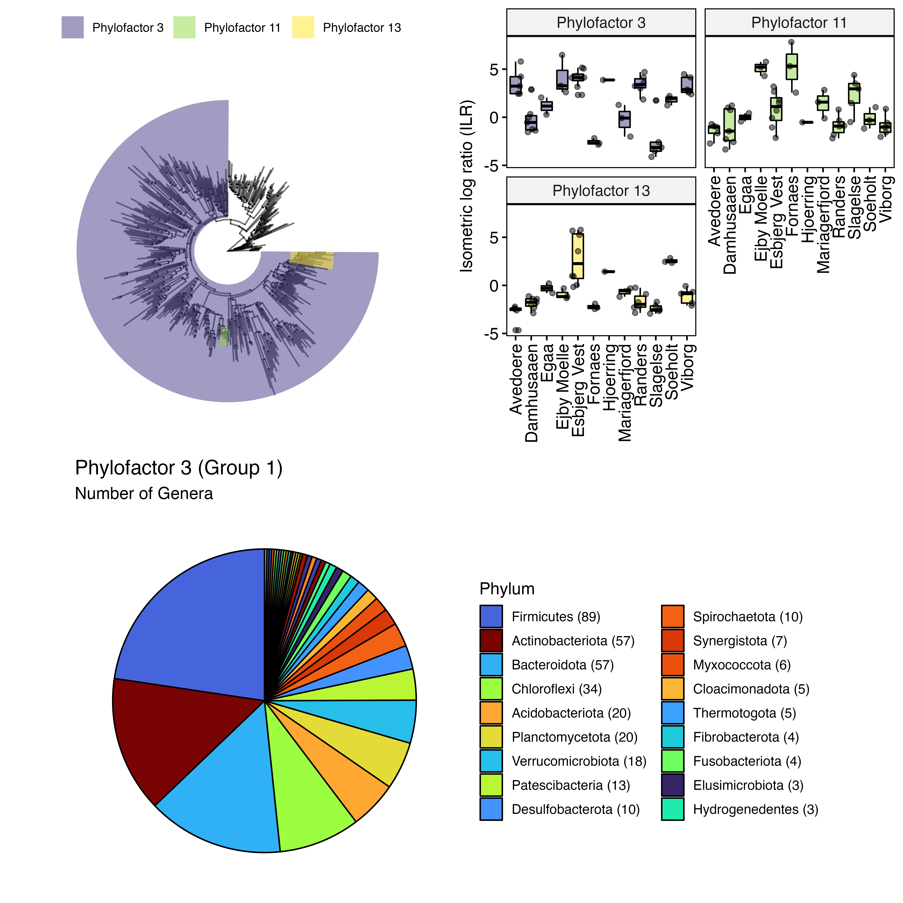
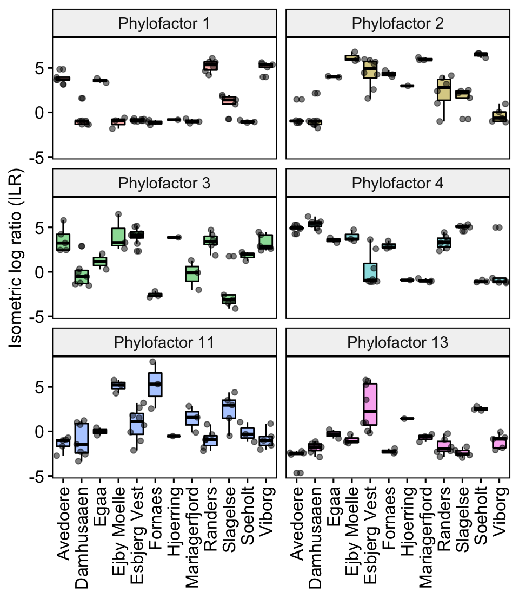
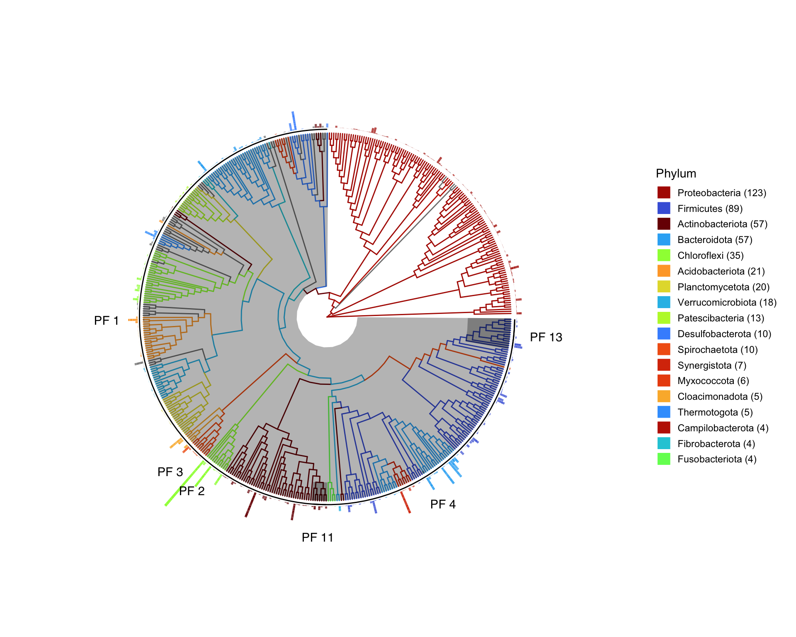
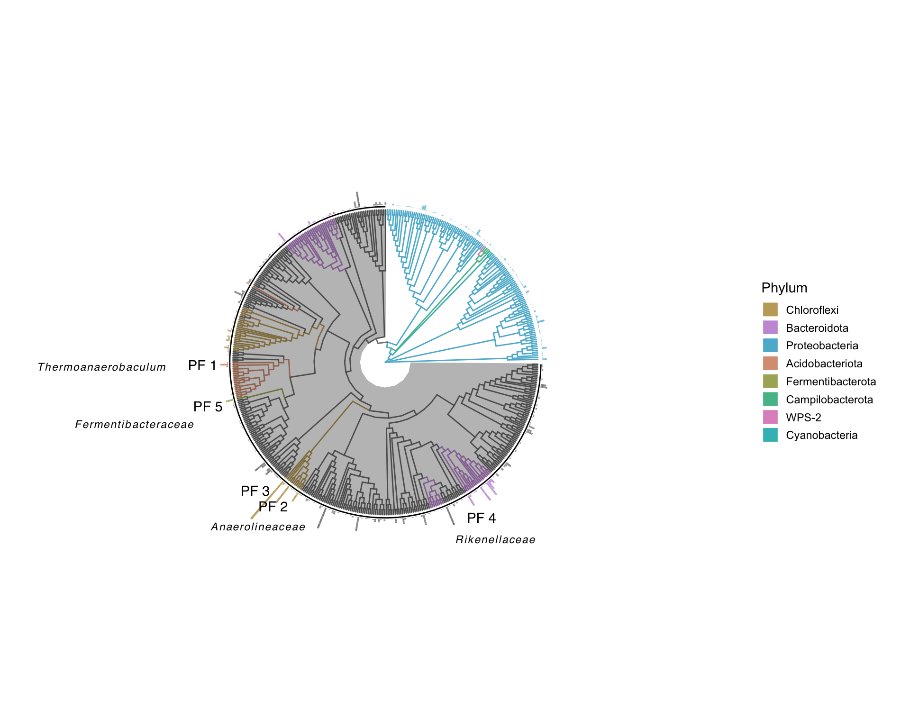
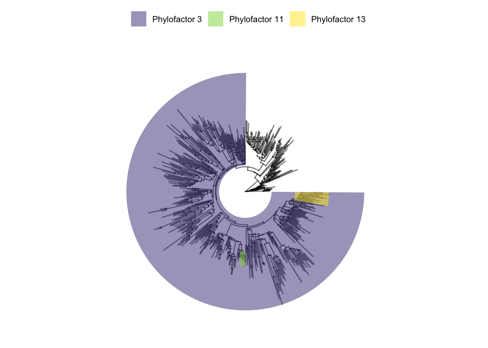
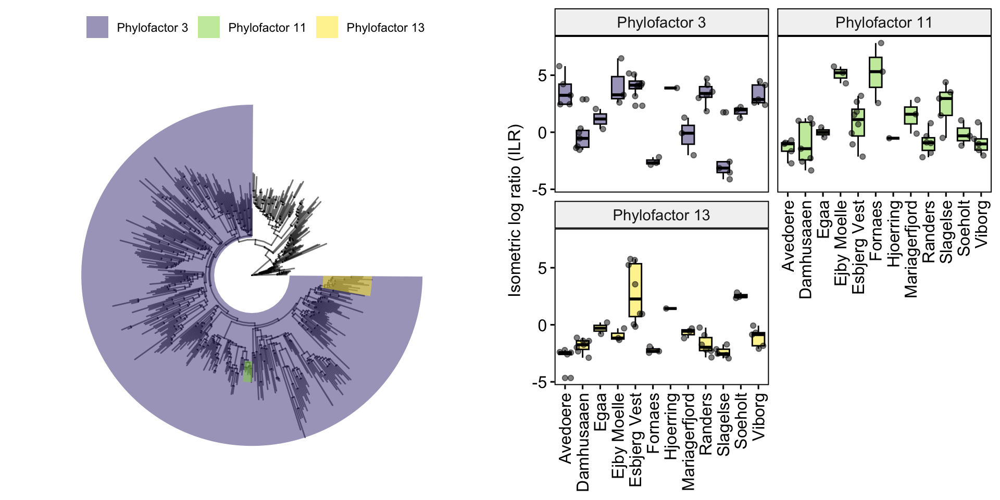
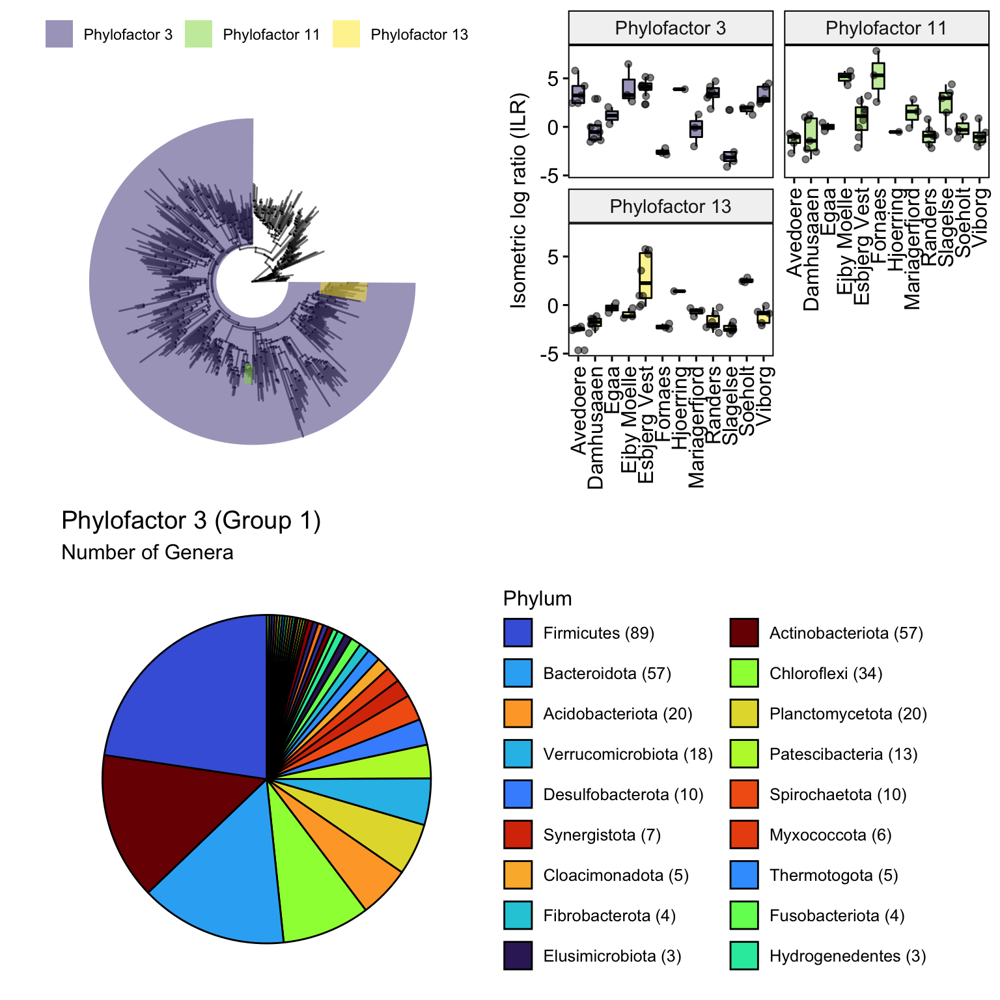

Chapter 8 Phylofactor analysis

8.1 Introduction
In this chapter you will learn how to use one of the main functions from the package phylofactor, as well as analyse and visualise the results. The main aims are to understand more about phylofactor and learn about data manipulation using dplyr and visulisations using ggplot and ggtree.
Phylofactor is a package developed by Alex Washburne, a mathematical biologist. It is a compositional analysis tool that ‘iteratively identifies the most important clades driving variation in the data through their associations with independent variables’ (Washburne et al. (2017)). For me, it is a great way to assess clade-specific treatment effects or environmental associations. In combination with other differential abundance analysis methods it helped me to gain confidence in biological interpretations of microbial community associations to environmental metadata or treatments. I also use it to visualise selected identified clades on a phylogenetic tree.
The package enables the use of different statistical tests, such as twoSample comparisons (i.e. t-test, Wilcox text, Fisher exact test) or regression modelling of abundances, transformed into isometric log ratios (ILRs) - sometimes called balances - to study treatment effects or environmental associations. It does this for aggregated abundances on edges of a phylogenetic tree, hence includes associations of abundances of whole clades of ASVs.
Check out the papers Phylofactorization: a graph-partitioning algorithm to identify phylogenetic scales of ecological data (Washburne et al. (2019)) and Phylogenetic factorization of compositional data yields lineage-level associations in microbiome datasets (Washburne et al. (2017)) to learn more about the algorithms used. Here also a great Phylofactor tutorial.
You will need a phylogenic tree for this analysis. For example, in chapter 4 we have built a phylogenetic tree from ASVs using the insertion tree method with qiime2. This tree was then imported into R and included into a phyloseq object as shown in chapter 5.
For this tutorial we will be using the same phyloseq object and apply the PhyloFactor function of the Phylofactor package. This function is used to assess associations of relative abundances with selected metadata, assuming a normal distribution (ILRs are normally distributed). It is basically finding variation in ILRs or balances (which are two groups of abundances delineated by an edge in the tree) that respond to treatments or environmental data.
The visualisations of the trees relies on ggplot (Wickham, Chang, and Wickham (2016)) and ggtree (Yu et al. (2017)).
8.1.1 Prerequisites and required files
- Maybe some basic skills in manipulating data with the packages
dplyr,ggplotand other packages in thetidyversebut not essential.
- Phylofactor tutorial read
- All required packages, including phylofactor, installed.
- A
phyloseqobject that includes a phylogenetic tree; either read in from a pre-saved.rdsfile or created as described in chapter 5 under “Import qiime-files and create a phyloseq object”.
- If you dont have your own data you can download the pre-saved
.rdsobject from Chapter 5 and follow the below steps: ps_ProjectX_2022July. This object was created from publicly available data from anaerobic sludge of Danish wastewater treatment plants.
8.1.2 Custom functions
There are several functions available in phylofactor to review the model outputs and to review which taxa were associated with groups of ASVs/clades that are part of significant edges in each factor.
I also created some custom functions that make it a little easier (for me). They are available to download. I am no coder so the code in the functions may offend you but they worked :). If you want to use these extra functions you can download them into your working directory and load them into your R environment using the dget function (e.g. phyfacsummary <- dget("./custom-functions/phyfacsummary.R")). I usually keep custom functions in a separate folder, here named ‘custom-functions’.
If you want to learn what the functions do and customise them further, you can also copy the code out of the function and have a go at running the code yourself.
Custom functions. Download and add to your working directory:
8.2 Workflow
8.2.1 Load packages and custom functions
# install packages
# if (!requireNamespace("BiocManager", quietly = TRUE))
# install.packages("BiocManager")
# devtools::install_github("hadley/devtools")
# devtools::install_github('reptalex/phylofactor')
# BiocManager::install(c("Biostrings","ggtree","phyloseq", "microbiome",
# "escamero/mirlyn", "ggtreeExtra"))
# install.packages(c("tidyverse", "ggpubr", "vegan",
# "devtools","remotes", "colorspace"))
library(phyloseq)
library(ggpubr) # a handy helper package for ggplots
library(tidyverse)
theme_set(theme_bw()) # setting the theme for ggplots
library(colorspace)
library(ggtreeExtra)
library(ggtree)
library(ggnewscale)
## phyfacsummary function
# Function to summarise all phylofactor factors in a meaningful way into a dataframe
# p adjusted method = Bonferroni
# Enter the phylofactor file and the phyloseq object to get a dataframe with model results,
# abundances and taxa info
# the third function input is '4' or '5', 4 is used when the phylofactor
# model setting was set to 'F', if 'var' use 5
phyfacsummary <- dget("./custom-functions/phyfacsummary.R")
## addILRtophyloseq function
# Function to take a phylofactor file and extract the mean sample ILRs and
# add those to the phyloseq sample data those can then be used for plotting graphs
# together with treatment data.
addILRtophyloseq <- dget("./custom-functions/addILRtophyloseq.R")
## ILR_plotfunction
ILR_plotfunction <- dget("./custom-functions/ILR_plotfunction.R")
## mytreefunctionwithbarplots
# Tree functions combining phylum colors with grey
# phylofactor highlights.
# Requires a colour vector 'treecols'
# Requires an order vector 'ordervec' that includes the names of
# all phyla to be included into the legend in that order (example shown below).
mytreefunctionwithbarplots <- dget("./custom-functions/mytreefunctionwithbarplots.R")
## Prevalence table function
# get overview of abundances, mean prevalence is the mean 'appearance' of
# ASVs of the taxon across all samples
prevalencedf <- dget("./custom-functions/myprevalencetablefunction.R")8.2.2 Load phyloseq object
Do this if you saved a phyloseq object in .rds format before. Otherwise create a phyloseq object as described in chapter 5 under “Import qiime-files and create a phyloseq object”.
# reading in a previously saved phyloseq object
ps <- readRDS('ps_ProjectX_2022July')
#ps (not run) to get an overview of number of taxa and samples contained in the phyloseq object
# phyloseq-class experiment-level object
# otu_table() OTU Table: [ 4218 taxa and 51 samples ]
# sample_data() Sample Data: [ 51 samples by 15 sample variables ]
# tax_table() Taxonomy Table: [ 4218 taxa by 7 taxonomic ranks ]
# phy_tree() Phylogenetic Tree: [ 4218 tips and 4217 internal nodes ]
# check metadata if needed
# df <- data.frame(sample_data(ps))8.2.3 Pre-filtering
Some quality filtering of individual ASVs. This is up to the analyst and aims of the project.
Here it was choosen to remove ASVs with few reads and those ASVs that could not be assigned a Phylum. Use the prune_taxa() function from phyloseq to filter taxa or the prune_samples() function to filter selected samples.
The ASV abundances are then agglomerated to Genus level. This makes things a little easier to handle computationally and interpret visually at the end.
# Filter any phyla that have not been classified, create a new phyloseq object called ps.phylo
ps.phylo = subset_taxa(ps, !is.na(Phylum) & !Phylum %in% c("", "uncharacterized"))
ps.phylo <- prune_taxa(taxa_sums(ps.phylo) > 10, ps.phylo)
# ps.phylo
# phyloseq-class experiment-level object
# otu_table() OTU Table: [ 3325 taxa and 51 samples ]
# sample_data() Sample Data: [ 51 samples by 15 sample variables ]
# tax_table() Taxonomy Table: [ 3325 taxa by 7 taxonomic ranks ]
# phy_tree() Phylogenetic Tree: [ 3325 tips and 3324 internal nodes ]
# Option to agglomerate abundances to a certain taxa level
# (not necessary; increases speed of running PhyloFactor for this tutorial)
ps.phylo <- phyloseq::tax_glom(ps.phylo, taxrank = "Genus")
# ps.phylo
# phyloseq-class experiment-level object
# otu_table() OTU Table: [ 525 taxa and 51 samples ]
# sample_data() Sample Data: [ 51 samples by 15 sample variables ]
# tax_table() Taxonomy Table: [ 525 taxa by 7 taxonomic ranks ]
# phy_tree() Phylogenetic Tree: [ 525 tips and 524 internal nodes ]8.2.4 Running PhyloFactor
For this example, the explanatory variable Location is used to regress the response (abundances). This has to be a factor or numeric so check your explanatory beforehand.
You can choose between choice = "var" or choice = "F". This is explained a bit in the tutorial. Alex Washburn has answered my question on this topic on the phylofactor GitHub repo here. He commented: “I would use ”var” to study differences in community composition (big changes in abundance!) whereas I always use ”F” if I’m looking for bioindicator lineages (high signal/noise ratio).”. For choice = "var" the regression function ‘finds’ the most explained variation for each edge, while for choice = "F" it finds the highest F-ratio (explained/unexplained variance). This is fundamental stuff and look this up separately if you want to learn more about what that means. I am also not a 100% on top of the math behind the stat myself.
Here, we run the PhyloFactor function with choice = "var".
# create/extract metadata object from phyloseq object
meta.df <- data.frame(sample_data(ps.phylo))
# Extract rownames (Sample IDs)
rnames <- rownames(meta.df)
# Explanatory variable for model
X <- meta.df$Location
# check explanatory
summary(X)## Avedoere Damhusaaen Egaa Ejby Moelle Esbjerg Vest
## 5 7 2 3 8
## Fornaes Hjoerring Mariagerfjord Randers Slagelse
## 3 1 3 6 5
## Soeholt Viborg
## 3 5# name the vector data with sample IDs
names(X) <- rnames
# create an ASV table for phylofactor
Data = as(otu_table(ps.phylo), "matrix")
Data = as.data.frame(Data)
# create tree object from phyloseq object for phylofactor
tree <- phy_tree(ps.phylo)
# unroot the tree, this is critical for phylofactor to work
tree_ur <- ape::unroot(tree)
# check if unrooted
ape::is.rooted(tree_ur) # FALSE IS GOOD## [1] FALSE# check that all in order
all(rownames(Data) == row.names(tax_table(ps.phylo))) ## [1] TRUEall(tree_ur$tip.label == row.names(tax_table(ps.phylo)))## [1] TRUE# Run phylofactor
PF <- phylofactor::PhyloFactor(Data,tree_ur,X,
frmla=Data~X, # Data (ASV abundances) as a response to X (Location)
ncores = 2, # number of cores
stop.early = NULL,
transform.fcn=log, # log-ratio transform
KS.Pthreshold = 0.01, # Kolmogorov Smirnov significance level
nfactors = 13, # the first 13 phylofactors only - in interest of time
choice = "var") # see notes above##
1 factor completed in 0.0284 minutes. Estimated time of completion: 2022-10-16 11:36:54
2 factors completed in 0.0517 minutes. Estimated time of completion: 2022-10-16 11:36:52
3 factors completed in 0.0736 minutes. Estimated time of completion: 2022-10-16 11:36:51
4 factors completed in 0.096 minutes. Estimated time of completion: 2022-10-16 11:36:50
5 factors completed in 0.117 minutes. Estimated time of completion: 2022-10-16 11:36:50
6 factors completed in 0.138 minutes. Estimated time of completion: 2022-10-16 11:36:50
7 factors completed in 0.159 minutes. Estimated time of completion: 2022-10-16 11:36:49
8 factors completed in 0.18 minutes. Estimated time of completion: 2022-10-16 11:36:49
9 factors completed in 0.201 minutes. Estimated time of completion: 2022-10-16 11:36:49
10 factors completed in 0.222 minutes. Estimated time of completion: 2022-10-16 11:36:49
11 factors completed in 0.244 minutes. Estimated time of completion: 2022-10-16 11:36:49
12 factors completed in 0.264 minutes. Estimated time of completion: 2022-10-16 11:36:49
13 factors completed in 0.285 minutes. Estimated time of completion: 2022-10-16 11:36:49 # saveRDS(PF,'pf-example.rds') # save Phylofactor object to .rds file
rm(tree, tree_ur, Data, X, meta.df) #remove unnecessary objects from R environment
# The KS threshold determines the significance at which the variation
# (in response to the explanatory) of one edge balance is different enough to the remaining edges
# to become a factor. If you have a better definition please let me know
# (on the github discussion page ideally (see Chapter 1)).
# If no value is provided to nfactors - the algorithm will continue until
# no edge are found anymore.8.2.5 Reviewing output
Simply run the phylofactor output object (here PF) to get an overview of the results. You can also access individual data outputs using the $ operator, e.g. by running PF$factors you get a full list of all factors.
# Overview
PF # showing the output of the first 10 factors ## phylofactor object from function PhyloFactor
## --------------------------------------------
## Method : glm
## Choice : var
## Formula : Data ~ X
## Number of species : 525
## Number of factors : 13
## Frac Explained Variance : 0.0976
## Largest non-remainder bin : 393
## Number of singletons : 10
## Paraphyletic Remainder : 130 species
##
## -------------------------------------------------------------
## Factor Table:
## Group1 Group2 ExpVar
## Factor 1 tip 524 member Monophyletic clade 0.0103300
## Factor 2 tip 523 member Paraphyletic clade 0.0099537
## Factor 3 393 member Paraphyletic clade 130 member Monophyletic clade 0.0086014
## Factor 4 tip 392 member Paraphyletic clade 0.0085960
## Factor 5 tip 391 member Paraphyletic clade 0.0082704
## Factor 6 tip 390 member Paraphyletic clade 0.0074320
## Factor 7 tip 389 member Paraphyletic clade 0.0071634
## Factor 8 tip 388 member Paraphyletic clade 0.0068817
## Factor 9 tip 387 member Paraphyletic clade 0.0062989
## Factor 10 tip 386 member Paraphyletic clade 0.0062942
## F Pr(>F)
## Factor 1 66.4130 0.0000e+00
## Factor 2 18.3790 3.8480e-12
## Factor 3 13.6270 3.5753e-10
## Factor 4 16.5450 1.9611e-11
## Factor 5 24.9430 2.7978e-14
## Factor 6 40.3430 0.0000e+00
## Factor 7 34.4080 1.1102e-16
## Factor 8 26.0110 1.3989e-14
## Factor 9 13.2550 5.3516e-10
## Factor 10 9.6703 4.2019e-08# Factors only
# PF$factors
# Group1 Group2 ExpVar F Pr(>F)
# Factor 1 tip 524 member Monophyletic clade 0.010329782 66.41304 0.000000e+00
# Factor 2 tip 523 member Paraphyletic clade 0.009953684 18.37912 3.848033e-12
# Factor 3 393 member Paraphyletic clade 130 member Monophyletic clade 0.008601447 13.62745 3.575326e-10
# Factor 4 tip 392 member Paraphyletic clade 0.008595997 16.54491 1.961098e-11
# Factor 5 tip 391 member Paraphyletic clade 0.008270358 24.94341 2.797762e-14
# Factor 6 tip 390 member Paraphyletic clade 0.007431980 40.343182 0.000000e+00
# Factor 7 tip 389 member Paraphyletic clade 0.007163353 34.408383 1.110223e-16
# Factor 8 tip 388 member Paraphyletic clade 0.006881666 26.011227 1.398881e-14
# Factor 9 tip 387 member Paraphyletic clade 0.006298899 13.254861 5.351608e-10
# Factor 10 tip 386 member Paraphyletic clade 0.006294165 9.670307 4.201923e-08
# Factor 11 7 member Monophyletic clade 379 member Paraphyletic clade 0.006190757 7.694410 7.482782e-07
# Factor 12 tip 378 member Paraphyletic clade 0.005834903 49.443443 0.000000e+00
# Factor 13 14 member Monophyletic clade 364 member Paraphyletic clade 0.005749476 10.785867 9.736689e-09In this case there are 13 factors. Most factors are one tip (or one genus because we agglomerated abundance to this this taxon-level) against the remainder group (Group 2) of genera. Factor 3 contains 393 genera in group 1 and 130 genera in the remaining group (Group 2). Factor 11 and 13 also contain multiple genera in Group 1. Importantly, the ILRs/balances that became factors after Factor 3 are based only on abundances in the large Group 1 of Factor 3. Hence the balances of Factor 11, for example, can be seen as a sub-balance of Factor 3. In other words, the balance of Group 1 and 2 of Factor 11 are within Group 1 of Factor 3. This will become clearer once we visualise this.
Group 1 contains the ASVs/taxa with abundances that are different to the remainder (Group 2). This can be interpreted as following: For example, the abundances of the genus represented by factor 1 are significantly different among the locations of wastewater treatment plants. Factor 1 also explains most of the variation and has the highest F value, indicating its significance.
From this output we cannot tell which taxa are involved and in which locations the taxa have low or higher abundances, i.e. how different they are (+ or -) among the locations.
To look at the ASVs/taxa we require other functions and also create a taxonomy object:
## Taxa summaries
# To create a taxa summary a taxonomy dataframe is needed first,
# whose first column contains the species in the phylogeny and whose
# second column contains a semicolon-delimited taxonomy.
# Here, we extract that out of the phyloseq object as following.
taxonomy <- data.frame(tax_table(ps.phylo)) %>%
unite(Taxon, sep=";", c("Kingdom","Phylum","Class","Order","Family","Genus","Species")) %>%
rownames_to_column("Feature.ID")
# running pf.taxa function from phylofactor
phylofactor::pf.taxa(PF, taxonomy, factor = 1)## $group1
## [1] "Bacteria;Acidobacteriota;Thermoanaerobaculia;Thermoanaerobaculales;Thermoanaerobaculaceae;Thermoanaerobaculum"
##
## $group2
## [1] "Bacteria;Proteobacteria"
## [2] "Bacteria;Cyanobacteria"
## [3] "Bacteria;Campilobacterota"
## [4] "Bacteria;WPS-2"
## [5] "Bacteria;Gemmatimonadota"
## [6] "Bacteria;Nitrospirota"
## [7] "Bacteria;Actinobacteriota"
## [8] "Bacteria;Desulfobacterota"
## [9] "Bacteria;Sva0485"
## [10] "Bacteria;Myxococcota"
## [11] "Bacteria;Bdellovibrionota"
## [12] "Bacteria;SAR324_clade(Marine_group_B)"
## [13] "Bacteria;Dependentiae"
## [14] "Bacteria;Chloroflexi"
## [15] "Bacteria;Fusobacteriota"
## [16] "Bacteria;Firmicutes"
## [17] "Bacteria;Bacteroidota"
## [18] "Bacteria;Synergistota"
## [19] "Bacteria;Verrucomicrobiota"
## [20] "Bacteria;Spirochaetota"
## [21] "Bacteria;Cloacimonadota"
## [22] "Bacteria;Patescibacteria"
## [23] "Bacteria;Elusimicrobiota"
## [24] "Bacteria;Planctomycetota"
## [25] "Bacteria;Fibrobacterota"
## [26] "Bacteria;WS4"
## [27] "Bacteria;WS1"
## [28] "Bacteria;Armatimonadota"
## [29] "Bacteria;Methylomirabilota"
## [30] "Bacteria;Acetothermia"
## [31] "Bacteria;Coprothermobacterota"
## [32] "Bacteria;Thermotogota"
## [33] "Bacteria;Deinococcota"
## [34] "Bacteria;Hydrothermae"
## [35] "Bacteria;Acidobacteriota;Aminicenantia"
## [36] "Bacteria;Caldisericota"
## [37] "Bacteria;Caldatribacteriota"
## [38] "Bacteria;Sumerlaeota"
## [39] "Bacteria;Fermentibacterota"
## [40] "Bacteria;Hydrogenedentes"
## [41] "Bacteria;Latescibacterota"
## [42] "Bacteria;CK-2C2-2"
## [43] "Bacteria;Zixibacteria"
## [44] "Bacteria;Acidobacteriota;c5LKS83"
## [45] "Bacteria;Acidobacteriota;Thermoanaerobaculia;Thermoanaerobaculales;Thermoanaerobaculaceae;Subgroup_10"
## [46] "Bacteria;Acidobacteriota;Holophagae"
## [47] "Bacteria;Acidobacteriota;Blastocatellia"
## [48] "Bacteria;Acidobacteriota;Acidobacteriae"
## [49] "Bacteria;Acidobacteriota;Vicinamibacteria"
## [50] "Bacteria;Acidobacteriota;Subgroup_21"
## [51] "Bacteria;Acidobacteriota;Subgroup_18"
## [52] "Bacteria;Marinimicrobia_(SAR406_clade)"This output shows that the genus Thermoanaerobaculum (Phylum Acidobacteriota) was represented by factor 1 (Group 1) and was significantly different to the remainder (Group 2) between Locations.
# create a summary for a factor, this time for factor 3
s <- summary(PF,taxonomy,factor=3)
s## phylofactor object from function PhyloFactor
## --------------------------------------------
## Method : glm
## Algorithm : contrast_basis
## Choice : var
## Formula : Data ~ X
## Factor : 3
## Edges Considered : 1043
##
## Group1 Group2
## Factor 3 393 member Paraphyletic clade 130 member Monophyletic clade
## ExpVar F Pr(>F)
## Factor 3 0.008601447 13.62745 3.575326e-10
## ========================================================================
## Taxon Tables:
## Group1:
## Taxon nSpecies signal
## 1 Bacteria;Bacteroidota 57 NA
## 2 Bacteria;Firmicutes 89 NA
## 3 Bacteria;Chloroflexi 34 NA
## ................. 37 rows omitted .................
## ------------------------------------------------------------------------
## Group2:
## Taxon nSpecies signal
## 1 Bacteria;Proteobacteria 123 NA
## 2 Bacteria;Campilobacterota 4 NA
## 3 Bacteria;WPS-2 1 NA
## ................. 1 row omitted .................# List all taxa for each group
s$taxa.split## $group1
## [1] "Bacteria;Gemmatimonadota"
## [2] "Bacteria;Nitrospirota"
## [3] "Bacteria;Actinobacteriota"
## [4] "Bacteria;Desulfobacterota"
## [5] "Bacteria;Sva0485"
## [6] "Bacteria;Myxococcota"
## [7] "Bacteria;Bdellovibrionota"
## [8] "Bacteria;SAR324_clade~Marine_group_B~"
## [9] "Bacteria;Dependentiae"
## [10] "Bacteria;Chloroflexi"
## [11] "Bacteria;Fusobacteriota"
## [12] "Bacteria;Firmicutes"
## [13] "Bacteria;Bacteroidota"
## [14] "Bacteria;Synergistota"
## [15] "Bacteria;Verrucomicrobiota"
## [16] "Bacteria;Spirochaetota"
## [17] "Bacteria;Cloacimonadota"
## [18] "Bacteria;Patescibacteria"
## [19] "Bacteria;Elusimicrobiota"
## [20] "Bacteria;Planctomycetota"
## [21] "Bacteria;Fibrobacterota"
## [22] "Bacteria;WS4"
## [23] "Bacteria;WS1"
## [24] "Bacteria;Armatimonadota"
## [25] "Bacteria;Methylomirabilota"
## [26] "Bacteria;Acetothermia"
## [27] "Bacteria;Coprothermobacterota"
## [28] "Bacteria;Thermotogota"
## [29] "Bacteria;Deinococcota"
## [30] "Bacteria;Hydrothermae"
## [31] "Bacteria;Acidobacteriota"
## [32] "Bacteria;Caldisericota"
## [33] "Bacteria;Caldatribacteriota"
## [34] "Bacteria;Sumerlaeota"
## [35] "Bacteria;Fermentibacterota"
## [36] "Bacteria;Hydrogenedentes"
## [37] "Bacteria;Latescibacterota"
## [38] "Bacteria;CK-2C2-2"
## [39] "Bacteria;Zixibacteria"
## [40] "Bacteria;Marinimicrobia_~SAR406_clade~"
##
## $group2
## [1] "Bacteria;Proteobacteria" "Bacteria;Cyanobacteria"
## [3] "Bacteria;Campilobacterota" "Bacteria;WPS-2"The default for summary, provided a taxonomy object, is to find the shortest-unique-prefix labels for each species in each group. For example, there are no Proteobacteria, Cyanobacteria or Campilobacteria in Group 1.
The summary objects contains other useful data, including all ASVs IDs or the ILRs for each group, which may become handy if you wanted to do some custom filtering and figures of your taxonomy.
There are other summary tools available in the phylofactor package. Check them out in the phylofactor tutorial.
I created a custom function phyfacsummary that helped me to create a dataframe containing all ASVs, including the factors and model results. It includes the fitted values for each explanatory category (in this case the different digester locations), showing how abundances differ between different locations.
## Summary tables
# Following a custom function to provide a dataframe of all ASVs and their phylofactors
# It requires as input the phylofactor and phyloseq objects.
# It needs to be exactly the same pholoseq object (contain the ASVs and taxa)
# that was used prior to running PhyloFactor.
# The number (5 or 4) indicates which `choice` ('var' or 'F') was provided
# to the PhyloFactor function. Either 'var' (5) or 'F' (4). Just my poor coding here.
PF_summary <- phyfacsummary(PF, ps.phylo, 5)
head(PF_summary)## # A tibble: 6 × 24
## OTU Kingdom Phylum Class Order Family Genus Species Phylo…¹ `Pr(>F)` (Inte…²
## <chr> <chr> <chr> <chr> <chr> <chr> <chr> <chr> <int> <dbl> <dbl>
## 1 59c6… Bacter… Acido… Ther… Ther… Therm… Ther… NA 1 0 3.85
## 2 2a4a… Bacter… Chlor… Anae… Anae… Anaer… ADur… NA 2 3.85e-12 -0.523
## 3 ea17… Bacter… Gemma… Gemm… Gemm… Gemma… uncu… NA 3 3.58e-10 3.63
## 4 b3ca… Bacter… Nitro… Nitr… Nitr… Nitro… Nitr… NA 3 3.58e-10 3.63
## 5 085b… Bacter… Actin… Ther… Gaie… uncul… uncu… NA 3 3.58e-10 3.63
## 6 e990… Bacter… Actin… Ther… Soli… Solir… Cone… NA 3 3.58e-10 3.63
## # … with 13 more variables: XDamhusaaen <dbl>, XEgaa <dbl>,
## # `XEjby Moelle` <dbl>, `XEsbjerg Vest` <dbl>, XFornaes <dbl>,
## # XHjoerring <dbl>, XMariagerfjord <dbl>, XRanders <dbl>, XSlagelse <dbl>,
## # XSoeholt <dbl>, XViborg <dbl>, `Pr(>F)adj.` <dbl>, Abundance <dbl>, and
## # abbreviated variable names ¹Phylofactor, ²`(Intercept)`Check out the dataframe in your R environment.
8.2.6 Visualising factors
8.2.6.1 ILR boxplots
If the explanatory variable is a factor you can compare the ILRs using boxplots. Customise this to your needs.
## ILR boxplots
# If needed add another element to this plot. The boxplots of ILRs.
# Use the custom addILRtophyloseq function and create a new phyloseq object with
# added ILR results in the sample_data (for plotting)
ps.ILR <- addILRtophyloseq(ps.phylo, PF)
# Quick Check that they have 'arrived'.
head(data.frame(sample_data(ps.ILR)))## OTU_ID Assay.Type Bases BioProject Bytes
## sa1 SRR12204258 AMPLICON 13254234 PRJNA645373 9235913
## sa2 SRR12204269 AMPLICON 24196788 PRJNA645373 16404070
## sa3 SRR12204280 AMPLICON 15758554 PRJNA645373 10758456
## sa4 SRR12204287 AMPLICON 20048406 PRJNA645373 13009806
## sa5 SRR12204288 AMPLICON 37634632 PRJNA645373 24207581
## sa6 SRR12204289 AMPLICON 43555904 PRJNA645373 27963491
## Organism collection_date loc Reactor Type
## sa1 anaerobic digester metagenome 30/11/16 Ejby Moelle RT <NA>
## sa2 anaerobic digester metagenome 9/3/16 Soeholt RT <NA>
## sa3 anaerobic digester metagenome 17/3/16 Esbjerg Vest RT1A <NA>
## sa4 anaerobic digester metagenome 5/12/16 Viborg RT2 DS
## sa5 anaerobic digester metagenome 5/12/16 Viborg RT2 BL
## sa6 anaerobic digester metagenome 5/12/16 Viborg RT1 DS
## Purpose Experiment lat_lon
## sa1 reactorfoampotentials SRX8715180 55.398077 N 10.415041 E
## sa2 reactorfoampotentials SRX8715169 56.175302 N 9.582588 E
## sa3 reactorfoampotentials SRX8715158 55.488235 N 8.430655 E
## sa4 foamnofoamcomparison SRX8715151 56.425367 N 9.4527943 E
## sa5 foamnofoamcomparison SRX8715150 56.425367 N 9.4527943 E
## sa6 foamnofoamcomparison SRX8715149 56.425367 N 9.4527943 E
## ReleaseDate Sample.Name Location Phylofactor.1 Phylofactor.2
## sa1 2021-01-01T00:00:00Z 16SAMP-17236 Ejby Moelle -0.6074442 5.94063684
## sa2 2021-01-01T00:00:00Z 16SAMP-17231 Soeholt -1.1404128 6.12600491
## sa3 2021-01-01T00:00:00Z 16SAMP-17233 Esbjerg Vest -0.7420321 1.56133586
## sa4 2021-01-01T00:00:00Z MQ170915-14 Viborg 5.0713421 -0.63550964
## sa5 2021-01-01T00:00:00Z MQ170915-13 Viborg 5.4619244 -1.09156044
## sa6 2021-01-01T00:00:00Z MQ170915-12 Viborg 5.6013748 0.05169486
## Phylofactor.3 Phylofactor.4 Phylofactor.5 Phylofactor.6 Phylofactor.7
## sa1 3.278522 3.6816103 3.7423730 3.8698905 2.7458575
## sa2 1.238992 -1.1624380 -1.1654072 -1.1683916 0.2420341
## sa3 3.166636 3.6278741 0.6330391 -0.8095717 -0.8116502
## sa4 2.590512 -0.7021602 -0.7039537 -0.7057564 -0.7075684
## sa5 4.140900 -1.1982694 -1.2013301 -1.2044065 -1.2074987
## sa6 2.871972 -1.2413042 -1.2444748 -1.2476617 -1.2508649
## Phylofactor.8 Phylofactor.9 Phylofactor.10 Phylofactor.11 Phylofactor.12
## sa1 3.1473369 3.5218658 4.53504042 4.2858832 2.8287836
## sa2 -1.1707730 5.5491698 -0.72811872 1.0431161 -1.1541523
## sa3 0.8719747 -0.8114947 4.58174994 -2.1378950 2.0158630
## sa4 3.4297811 -0.7005523 -0.70236488 -0.5835734 -0.7082458
## sa5 3.1914016 -1.2023855 -1.20549651 -1.0232323 1.2331789
## sa6 3.7348844 -1.2444628 0.06025997 0.8704741 0.6733841
## Phylofactor.13
## sa1 -0.31245968
## sa2 2.45252778
## sa3 0.03305495
## sa4 -0.86096730
## sa5 -2.09845816
## sa6 -0.69080729# Notice the Phylofactor columns
## Create plotdata
# Some vectors to filter and change the appearance of the plot
factorvector <- c("Phylofactor.1","Phylofactor.2",
"Phylofactor.3","Phylofactor.4",
"Phylofactor.11","Phylofactor.13")
labelvec = c("Phylofactor 1","Phylofactor 2",
"Phylofactor 3","Phylofactor 4",
"Phylofactor 11","Phylofactor 13")
# rearrange the sample data for plotting
plotdata <- data.frame(sample_data(ps.ILR)) %>%
pivot_longer(cols = starts_with("Phylofactor"),
names_to = "ILR")
# create factors of the ILR column
plotdata$ILR <- factor(plotdata$ILR, levels = plotdata[1:PF$nfactors, ]$ILR)
# Select specific factor vectors for plotting using the factorvector to filter
plotdata_sub <- plotdata %>%
filter(ILR %in% factorvector)
# create factors of the ILR column
plotdata_sub$ILR <- factor(plotdata_sub$ILR, levels = plotdata_sub[1:length(unique(plotdata_sub$ILR)), ]$ILR)
# create ggplot object
pilr <- plotdata_sub %>%
ggboxplot(x = "Location", y = "value",
combine = TRUE,
facet.by = "ILR",
fill = "ILR",
ncol = 2,
alpha = 0.5,
ylab = ("Isometric log ratio (ILR)"),
panel.labs.font = list(size = 11),
panel.labs = list(ILR = labelvec)) +
geom_point(position = "jitter", alpha = 0.5) + # add jitter
theme(legend.position = "none") + # do not show legend
theme(axis.text.x = element_text(angle = 90, hjust = 1,
vjust = 0.5), axis.title.x = element_blank(), axis.text = element_text(size = 12))
# Choose custom colors with + scale_fill_manual(values = yourcolvector)
pilr 
# Alternatively you can use the custom function `ILR_plotfunction.R` to get the same outputThis visualises the taxa relative abundances (represented by the ILR or balances) of the different ‘Locations’. For example, the relative abundances of factor 1 (genus Thermoanaerobaculum) are highest in Randers and Viborg. It also appears to be the factor with the clearest differentiation between locations, as the ILRs of other factors are more variable with wider boxplots and more outliers.
In the next part we will visualise how the taxa relate to other clades in the phylogenetic tree.
8.2.6.2 Basic tree with factors highlighted in colour
Here we are using one of the functions from the phylofactor package. It is only one of several and I encourage you to check out the phylofactor tutorial to explore other visualisation, including heatmaps etc..
gtree <- phylofactor::pf.tree(PF)
ggtree::rotate_tree(gtree$ggplot,-45)This highlights that factor 3 represents the biggest group of various genera in this case. The purple colour represents Group1 and the uncolored part the remainder group (Group 2 or also called ‘bin’). From the results of the summary function shown earlier in this Workflow, we can check which taxa are in each of the groups. For example, the uncolored group (Group 2) contains Proteobacteria,Cyanobacteria and Campilobacterota.
The other factors, which represent only 1 genus are not visible in this figure because the pixels are simply too small.
I think representing it as a tree also highlights how one can interpret compositional changes in two ways. For example, one interpretation for Group 1 of factor 3, (purple coloured) is that is decreased in the locations Formaes and Slagelse (as indicated in the boxplots). Another interpretation is that Group 2 of factor 3 has increased instead. This is important to consider.
8.2.6.3 Coloured trees with factors highlighted in grey
Maybe some find it useful to identify the phyla directly in the tree and also get a sense of the abundances of individual tips (which are individual genera here). Do do that we can colour edges of the tree to represent their phylum.
First, prepare a color vector for the tree. There are different ways to do this and often I revert to add colours manually. Here we extract all phyla names from the taxonomy data and create a named color vector for each phylum.
## Create color vector
# use custom prevalence table function and select phyloseq object and phylum-level
taxa.df.phylum <- prevalencedf(ps.phylo, Phylum)
# set seed differently will change the random sampling of the colours
set.seed(1)
# randomly sample colours from this colour scheme
#treecols <- sample(colorspace::rainbow_hcl(nrow(unique(taxa.df.phylum))))
# Other color options
treecols <- sample(viridis::turbo(nrow(unique(taxa.df.phylum)), direction = -1, begin = 0, end = 1))
# treecols <- viridis::rainbow(nrow(unique(taxa.df.phylum)), direction = -1)
names(treecols) <- unique(taxa.df.phylum$Phylum)
rm(taxa.df.phylum)
treecols# Use custom prevalence table function and select phyloseq object and phylum-level
taxa.df.phylum <- prevalencedf(ps.phylo, Phylum)
# Choose the phyla with highest ASV counts
# This vector will determine the length and order of the phyla shown in the legend
# change this to your needs.
# In this case we fiter n > 3 and create a vector of the Phylum column
ordervec <- (taxa.df.phylum %>%
dplyr::filter(n > 3))$Phylum
# You could also create a custom vector. For example:
#ordervec <- c("Proteobacteria" , "Firmicutes" , "Actinobacteriota",
# "Bacteroidota", "Chloroflexi", "Acidobacteriota")
## Plot the tree
# setting the variables
layout = "circular"
branch.length = "none"
metadatacolumn <- 'Location'
offset.text = 5
pwidth = 0.05
factorvector = c(1,2,3,4, 11, 13) # choose which factors to highlight
# 'Copy' tree object from the phylofactor object into the phyloseq object for plotting
phyloseq::phy_tree(ps.phylo) <- PF$tree
# create long dataframe of metadata and select the columns OTU and Abundance
# then filter only unique rows
melt_simple <- psmelt(ps.phylo) %>%
dplyr::select(OTU, Abundance) %>%
unique()
# Create a phyla list to include into the tree for colouring
taxa.df.phylum <- phyloseq::tax_table(ps.phylo)@.Data %>%
as.data.frame %>%
rownames_to_column("OTUID") %>%
dplyr::select(OTUID, Phylum) %>%
column_to_rownames("OTUID")
phyla.list <- split(rownames(taxa.df.phylum),
taxa.df.phylum$Phylum,
drop = TRUE)
tree.df <- phyloseq::phy_tree(PF$tree)
ggtree_gps <- ggtree::groupOTU(tree.df, phyla.list, "Phylum")
# gg plotting
p <- ggtree::ggtree(ggtree_gps, aes(color = Phylum), layout = layout,
branch.length = branch.length) +
theme(legend.position = "right") +
scale_colour_manual(values = treecols, limits = ordervec,
breaks = ordervec,
guide = guide_legend(override.aes = list(size = 5),
keywidth = 0.2, keyheight = 0.2, order = 1))
# add barplots on the outside, representing relative abundances
p <- p + ggnewscale::new_scale_fill() +
geom_fruit(data = melt_simple,
geom = geom_bar,
mapping = aes(y = OTU, x = Abundance, group = label,
fill = Phylum), pwidth = 0.38, orientation = "y",
stat = "identity", show.legend = FALSE) +
scale_fill_manual(values = treecols,
limits = ordervec,
breaks = ordervec)
## add phylofactor highlights in grey
factor.map = data.frame(Phylofactor = 1:PF$nfactors, group = rep(1, PF$nfactors))
m <- nrow(factor.map)
n = ape::Ntip(PF$tree)
nd <- NULL
for (i in 1:m) {
grp <- PF$tree$tip.label[PF$groups[[factor.map[i,1]]][[factor.map[i, 2]]]]
grp <- intersect(grp, PF$tree$tip.label)
nd <- c(nd, tidytree::MRCA(PF$tree, grp))
}
df <- data.frame(factor.map, node = nd)
df$Phylofactor <- factor(df$Phylofactor, levels = df$Phylofactor)
p <- p + ggtree::geom_hilight(data = df, aes(node = node),
fill = "black", alpha = 0.3)
# Add a text label to identify the number and location of the phylofactor
for (i in factorvector) {
p <- p + geom_cladelabel(node =
(df %>% dplyr::filter(Phylofactor == i))$node, label = paste("PF",
(df %>% dplyr::filter(Phylofactor == i))$Phylofactor),
offset.text = offset.text,
hjust = "center")
}
rm(taxa.df.phylum, df,factor.map)All the above steps can also be called with the custom function mytreefunctionwithbarplots which I provided in the intro. This makes for neater code in your probably already busy R studio editor. The following output is identical to the above:
# requires the same ordervector as created above
# Use custom prevalence table function and select phyloseq object and phylum-level
# change this to your needs.
taxa.df.phylum <- prevalencedf(ps.phylo, Phylum)
ordervec <- (taxa.df.phylum %>%
dplyr::filter(n > 3))$Phylum
# If you prefer number of ASVs per each Phylum to be shown in legend:
# create a label vector to change the names in the legend. Needs to be in correct order.
labelvec <- (taxa.df.phylum %>%
dplyr::filter(n > 3) %>%
mutate(Phylum = paste0(Phylum, " (", n, ")")))$Phylum
p <- mytreefunctionwithbarplots(PF, ps.phylo,
layout = "circular",
branch.length = "none",
factorvector = c(1,2,3,4, 11, 13),
offset.text = 5,
pwidth = 0.05) +
scale_colour_manual(values = treecols,
limits = ordervec,
label = labelvec) +
guides(colour = guide_legend(override.aes = list(size = 5),
keywidth = 0.2,
keyheight = 0.2))
p
The locations of the selected phylofactors (PF) are now indicated by a text label. If you zoom into the image you may also notice a grey shading on the tip of the relevant genus.
The text label for the large PF 3 is aligned with the outside ‘centre’ of the grey shaded circle representing Group 1 of this factor. This is a little confusing here. Ideally this label should go inside the grey shaded area for clarity.
The outside bars indicate abundance of the relevant genus.
There are too many colours here and it is difficult to differentiate the different phyla. One solution for that is to create custom colours and order the legend in order of appearance of the phyla (using the ordervec vector). Alternatively, you can just add colour for selected phyla that you want to highlight (again using the ordervec vector). For example, from the summary results above we may want to highlight only the phyla that were part of the phylofactors. And perhaps include the phyla in Group 2 of factor 3 (the remainder bin from Factor 3).
# check which phyla to highlight in tree
s$taxa.split$group2 # this is the summary for factor 3 create above## [1] "Bacteria;Proteobacteria" "Bacteria;Cyanobacteria"
## [3] "Bacteria;Campilobacterota" "Bacteria;WPS-2"# check which taxa are involved for other factors
# summary(PF,taxonomy,factor=1) # Acidobacteriota;Thermoanaerobaculum
# summary(PF,taxonomy,factor=2) # Chloroflexi;Anaerolineaceae;ADurb.Bin120
# summary(PF,taxonomy,factor=4) # Bacteroidota;Rikenellaceae;DMER64
# summary(PF,taxonomy,factor=5) # Fermentibacterota
#s <- summary(PF,taxonomy,factor=11) # Actinobacteriota;Propionibacteriaceae
#s <- summary(PF,taxonomy,factor=13) # Various Firmicutes
# s$taxa.split$group1
# create ordervec
df <- prevalencedf(ps.phylo, Phylum)
ordervec <- (df %>%
dplyr::filter(Phylum %in% c("Proteobacteria", "Firmicutes", "Cyanobacteria",
"Campilobacterota", "WPS-2", "Acidobacteriota",
"Actinobacteriota", "Chloroflexi", "Bacteroidota", "Fermentibacterota")))$Phylum
# plot tree
# Requires a vector called 'treecols'
p <- mytreefunctionwithbarplots(PF, ps.phylo,
layout = "circular",
branch.length = "none",
factorvector = c(1,2,3,4,5, 11, 13),
offset.text = 5,
pwidth = 0.05)And maybe manually add family or genus names of important factors to the figure too:
# A small df to map the factors and groups
factor.map = data.frame(Phylofactor = 1:PF$nfactors, group = rep(1, PF$nfactors))
# Then get tip labels of selected factors and groups and use as index to the # taxonomy to get taxon names
# Create a df of taxa names for annotation - make sure that each taxon appears only once
# here the aim is to show the first common taxon level for each phylofactor
tax.names <- data.frame( Taxa = c(data.frame(tax_table(ps.phylo))[PF$tree$tip.label
[PF$groups[[factor.map[1,1]]][[factor.map[1, 2]]]],]$Genus,
data.frame(tax_table(ps.phylo))[PF$tree$tip.label
[PF$groups[[factor.map[2,1]]][[factor.map[2, 2]]]],]$Family,
data.frame(tax_table(ps.phylo))[PF$tree$tip.label
[PF$groups[[factor.map[4,1]]][[factor.map[4, 2]]]],]$Family,
data.frame(tax_table(ps.phylo))[PF$tree$tip.label
[PF$groups[[factor.map[5,1]]][[factor.map[5, 2]]]],]$Genus,
data.frame(tax_table(ps.phylo))[PF$tree$tip.label
[PF$groups[[factor.map[11,1]]][[factor.map[11, 2]]]],]$Family) ) %>%
unique()
# get node labels and add to factor.map
m <- nrow(factor.map)
nd <- NULL
for (i in 1:m) {
grp <- PF$tree$tip.label[PF$groups[[factor.map[i,1]]][[factor.map[i, 2]]]]
grp <- intersect(grp, PF$tree$tip.label)
nd <- c(nd, tidytree::MRCA(PF$tree, grp))
}
factor.map <- data.frame(factor.map, node = nd)
# add taxon annotations using the df
p <- p + geom_cladelabel(node =
(factor.map %>% dplyr::filter(Phylofactor == 1))$node,
label = paste('italic(', tax.names[1,],')'),
offset.text = 20,
hjust = "center",
fontsize = 3,
parse = TRUE)
p <- p + geom_cladelabel(node =
(factor.map %>% dplyr::filter(Phylofactor == 2))$node,
label = paste('italic(', tax.names[2,],')'),
offset.text = 10,
hjust = "center",
fontsize = 3,
parse = TRUE)
p <- p + geom_cladelabel(node =
(factor.map %>% dplyr::filter(Phylofactor == 4))$node,
label = paste('italic(', tax.names[3,],')'),
offset.text = 10,
hjust = "center",
fontsize = 3,
parse = TRUE)
p <- p + geom_cladelabel(node =
(factor.map %>% dplyr::filter(Phylofactor == 11))$node,
label = paste('italic(', tax.names[4,],')'),
offset.text = 10,
hjust = "center",
fontsize = 3,
parse = TRUE)
p
Now its a little easier to identify the who is who. This is just another way to explore your phylogeny and how they relate to the phylofactors.
8.2.6.4 Basic tree with factors highlighted in colour v.02
Alternatively highlight only the factors and explore the taxonomy represented by them in separate plots.
layout = "circular"
factor.map = data.frame(PF=1:PF$nfactors,
group = rep(1, PF$nfactors),
Phylofactor = paste0("Phylofactor.",1:PF$nfactors))
# Use this colour vector for the factor highlights and the boxplots
cols <- viridis::viridis(nrow(factor.map), direction = 1)
names(cols) <- factor.map$Phylofactor
m <- nrow(factor.map)
n = ape::Ntip(PF$tree)
nd <- NULL
for (i in 1:m) {
grp <- PF$tree$tip.label[PF$groups[[factor.map[i,1]]][[factor.map[i,2]]]]
grp <- intersect(grp, PF$tree$tip.label)
nd <- c(nd, tidytree::MRCA(PF$tree, grp))
}
df <- data.frame(factor.map, node = nd)
df$Phylofactor <- factor(df$Phylofactor,
levels = df$Phylofactor)
p <- ggtree::ggtree(PF$tree,
layout=layout,
aes(alpha = 0.3)) +
ggtree::geom_hilight(data = df,
aes(node = node,
fill = Phylofactor)) +
scale_fill_manual(values = cols,
limits = c('Phylofactor.3', 'Phylofactor.11', 'Phylofactor.13'),
labels = c('Phylofactor 3','Phylofactor 11','Phylofactor 13') ) +
theme(legend.title = element_blank(),
legend.position = "top") +
guides(alpha = "none")
p
Combine the tree with boxplots to show the differences in abundances.
# Use the custom addILRtophyloseq function and create a new phyloseq object with
# added ILR results in the sample_data (for plotting)
ps.ILR <- addILRtophyloseq(ps.phylo, PF)
p.ILR <- ILR_plotfunction(ps.ILR,
factorvector = c('Phylofactor.3', 'Phylofactor.11', 'Phylofactor.13'), # choose factors
explanatory = "Location", # metadata used in model
labelvec = c('Phylofactor 3','Phylofactor 11','Phylofactor 13'),
ncol = 2) + # of the facets (if more than one facet)
scale_fill_manual(values = cols)
# Combine plots
ggpubr::ggarrange(p, p.ILR, ncol = 2)
Additionally you may want to see the number of genera in group 1 of Phylofactor 3 (The purple colored clades). To do that you will need to filter all ASVs that are represented by Group1 in Phylofactor 3 and then create a plot for them separately.
# Create summary for factor 3
s <- summary(PF,taxonomy,factor=3)
# extract ASV IDs for group 1
s.ids <- s$species.list$Group1
# subset ps object
my_subset <- subset(otu_table(ps.phylo), rownames(otu_table(ps.phylo)) %in% s.ids)
new_physeq <- merge_phyloseq(my_subset, tax_table(ps.phylo), sample_data(ps.phylo))
# Use custom function to get prevalance table on Phylum level
plotdata <- prevalencedf(new_physeq, Phylum)
plotdata$Phylum <- factor(plotdata$Phylum, levels = plotdata$Phylum)
# create the order vectors, determining the Phyla names present in legend and their order
ordervec <- (plotdata %>% dplyr::filter(n > 2))$Phylum
# Legend labels, has to be same length as ordervec
labelvec <- (plotdata %>%
dplyr::filter(n > 2) %>%
mutate(Phylum = paste0(Phylum, " (", n, ")")))$Phylum
# colors from the tree colours - to align with tree figure if necessary
p.pf3 <- plotdata %>%
ggpubr::ggpie("n", fill = "Phylum") +
scale_fill_manual(values = treecols,
breaks = ordervec,
labels = labelvec) +
theme(axis.text.x=element_blank(),
legend.position = "right") +
guides(fill = guide_legend(ncol = 2, byrow = FALSE)) +
labs(title = "Phylofactor 3 (Group 1)", subtitle = "Number of Genera")
# Combine plots
ggpubr::ggarrange(ggarrange(p, p.ILR, nrow = 1),
p.pf3, nrow = 2)
# save figure
# ggsave("./img/phylofactor.png", height=9, width=9, units='in', dpi=600)Hopefully, this was helpful. Please send me any comments on the discussion section of the GitHub repository for this GitBook. You will need to get a GitHub account to join the discussion. Its free.